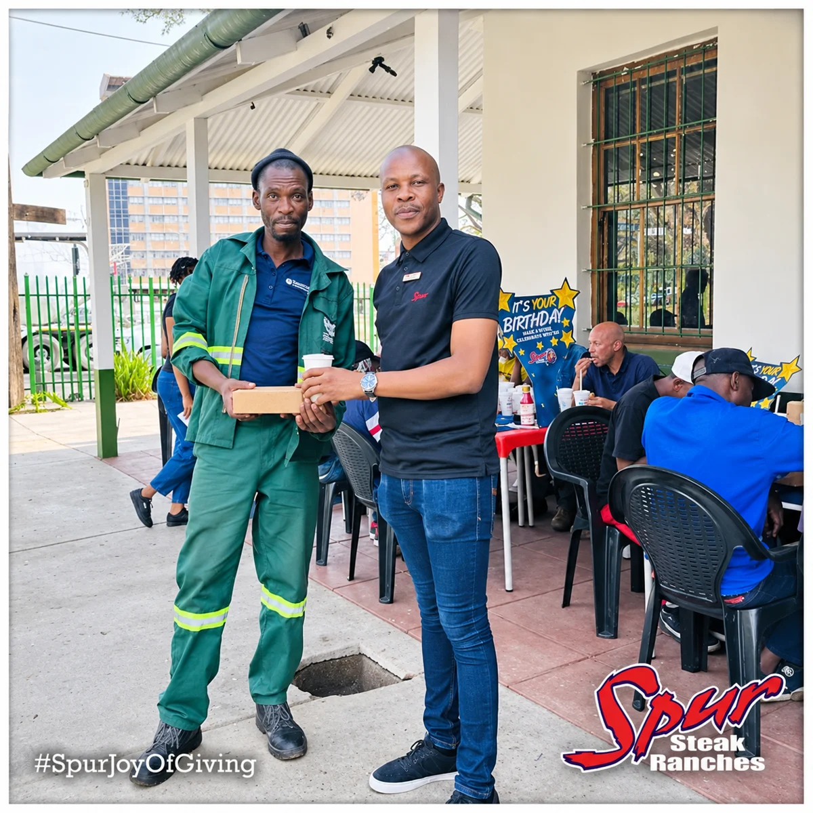
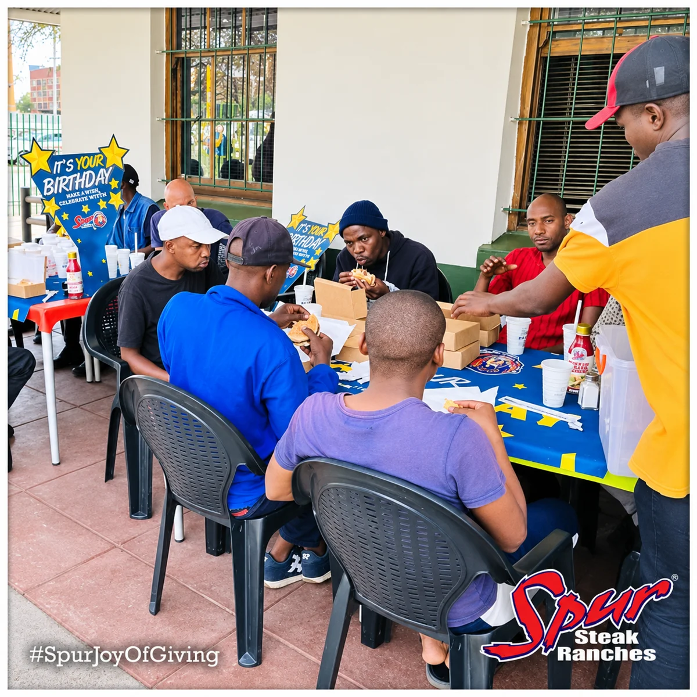
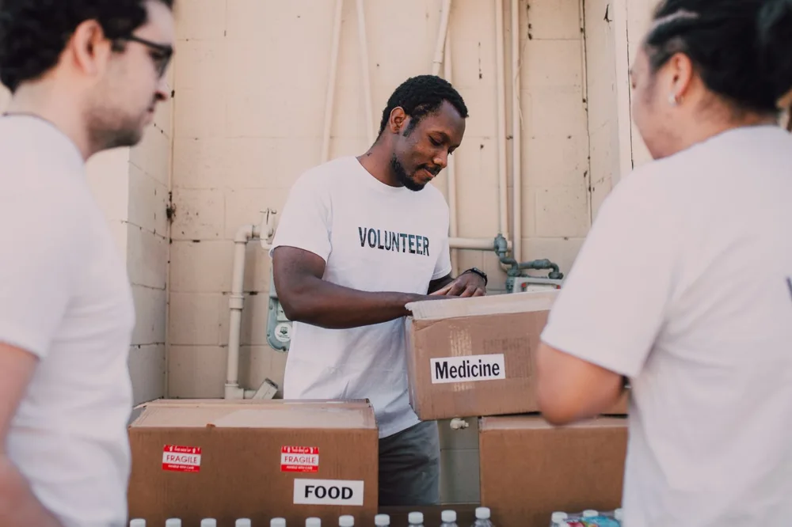
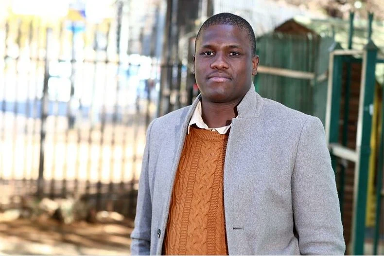
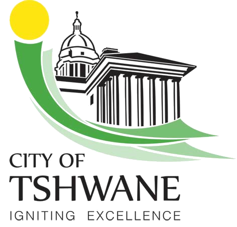
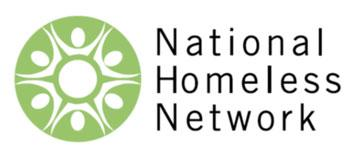

Temporary shelter
A place to stay while you work out your next steps. Call HUP to ask about space and admission.
Ask about a place
Shelter, meals and support for men
experiencing homelessness in Pretoria.

Giving back, together ↗Shelter and support for men
experiencing homelessness in Pretoria.
Homeless Upliftment Projects offers a temporary place to stay, daily meals for clients and someone to turn to when life becomes difficult.
Our team helps with counselling, looking for work and connecting with specialist services. It starts with a conversation about what you need.

Food, clothing, time or a financial contribution can help support the shelter’s work.
People continue to come forward to help HUP. If you would like to join them, speak to the team about what is needed now and how to arrange your donation.
Find your way to helpShelter, counselling and practical support to help people take the next step. Call HUP to ask what is available for your situation.
A place to stay while you work out your next steps. Call HUP to ask about space and admission.
Ask about a placeSpeak to the team about counselling and support for the difficulties you are facing.
About counsellingGuidance with looking for employment and working towards supporting yourself.
About work supportHelp connecting with rehabilitation centres when specialist substance-use support is needed.
About referralsDaily meals are served to HUP clients.
View the meal timetable →A place to rest. Someone to listen.
Space to think about what comes next.

Homelessness can follow the loss of a job, family difficulties or other circumstances. A place to stay gives someone room to begin working through what comes next.
HUP brings temporary accommodation together with counselling, guidance on finding work and referrals for specialist help.
There’s a place for you in this work.
Give what you can. We’ll help you find a useful way to contribute.
Explore more ways to helpWant to help, arrange a visit or ask about accommodation? Speak to the shelter team.
068 023 3487hupnpo@gmail.comWrite to HUPFor accommodation today, please call.
Thank you to the organisations supporting HUP’s work.

City of TshwaneSouth African Police ServiceDepartment of Social DevelopmentGauteng Provincial Government
HUP is a member of the National Homeless Network.
View HUP’s member listing ↗Help support people experiencing homelessness in Pretoria.
Get involved today